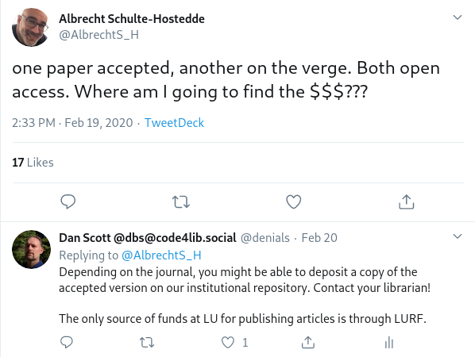

LU|Zone|UL
Making your work openly accessible
Dan Scott <https://dscott.ca/#i>
Associate Librarian
2020-03-06 
Learning outcomes
- Understand how LU|Zone|UL supports knowledge dissemination
- Find and understand publisher policies for self-deposit of your work
- Deposit your work in LU|Zone|UL
Open access mandates
As of May 1, 2015, researchers must make peer-reviewed publications resulting from Tri-Council supported research freely accessible within 12 months of publication.Tri-Agency Open Access Policy on Publications
Open access journals?
APCs can be expensive
Open access journals: yes, and...
Researchers are strongly encouraged to deposit a copy of the final, peer-reviewed manuscript into an accessible online repository immediately upon publication, even if the article is freely available on the journal’s website.Tri-Agency Open Access Policy on Publications
Beyond Tri-Agency
Institutional repositories
an archive for collecting, preserving, and disseminating digital copies of the intellectual output of an institution
Institutional repository. (2020). In Wikipedia.
Preservation: reference rot
| % of rot in United States Supreme Court decisions: | 50 |
| % of rot in Harvard Law Review and other journals: | 70 |
| % of rot in LU|Zone|UL: | 0 |
Zittrain, J., Albert, K., & Lessig, L. (2014). Perma: Scoping and Addressing the Problem of Link and Reference Rot in Legal Citations. Legal Information Management, 14(2), 88-99. doi:10.1017/S1472669614000255
Preservation: bit rot
- Regular file integrity checks
- Backups
Dissemination
- OAI-PMH is designed for dissemination; examples:
Dissemination: impact
Review of open access citation advantage studies:
| Total number of studies through 2015 | 70 |
| Studies that found a citation advantage | 46 |
| Studies that found no citation advantage | 17 |
| Inconclusive / other | 7 |
SPARC Europe. (2015). The Open Access Citation Advantage Service (OACA).
What can you deposit?
All kinds of scholarly work:
Before you deposit:
- Do you have the right to deposit the work?
- Articles:
- Check journal policies
- SHERPA/RoMEO can help
- Books / chapters: check your publication contract
Consult your librarian!
What version of the work?
- Submitted version: before peer review comments
- Accepted version: after incorporating comments
- Published version: publisher-created version
Options for depositing your work
- Through your librarian
- Self-deposit
Option 1: through your librarian
- Send the work to your librarian
- State that you accept the LU|Zone|UL license, which:
- Asserts that you have the right to make the work publicly available
- Grants Laurentian the right to make copies of the work publicly available
A good approach for a large volume of work!
Option 2: self-deposit (register)
- Register your LU|Zone|UL account:
- Just enter your Laurentian username in the username field
- You will receive an email with a verification link; click it
- Enter your name. Et voila!
Option 2: self-deposit (submit)
- Sign on with your Laurentian username and password
- Click Start a new submission
- Fill out the description form
- Upload your file(s)
- Accept the license
- Wait for the LU|Zone|UL admin to approve your submission
Bonus: vanityprofiles
- Communities and collections can have images and brief descriptive text:
- Contact your librarian :)
Pedagogical implications
If we created a simple Web-based repository, we could allow a student to first work on drafts of their assignment, then open it up to their professor or a TA for initial review, then open it up to the class to exchange their work with their classmates and participate in peer review. Outstanding work could be surfaced at wider levels of availability.Scott, D. (2007/2015). Research across the curriculum (blog post).
Check-in: do you / can you:
- Understand how LU|Zone|UL supports knowledge dissemination?
- Find and understand publisher policies for self-deposit of your work?
- Deposit your work in LU|Zone|UL